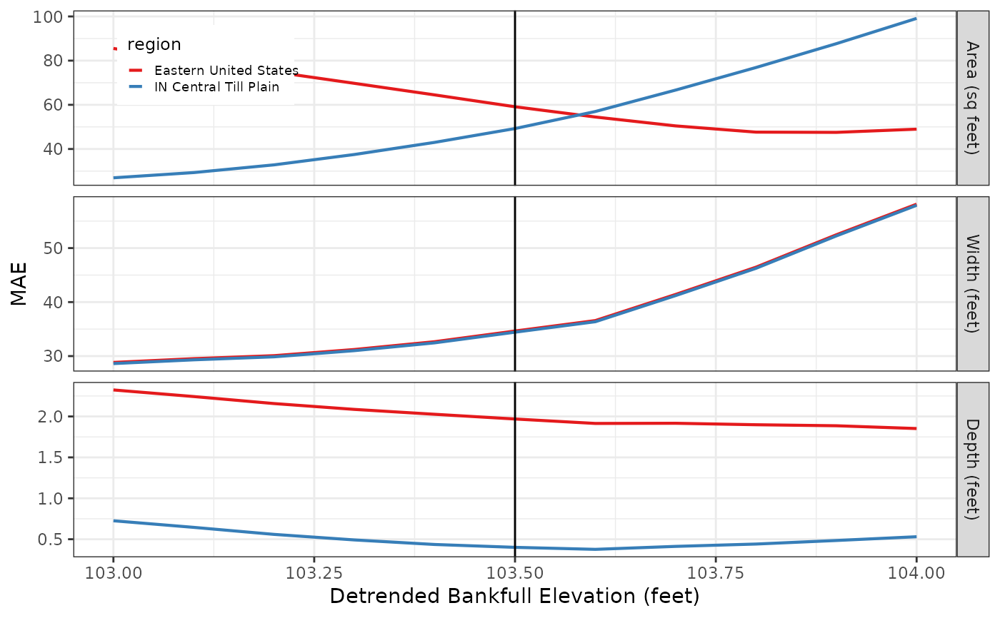

Produces a goodness-of-fit statistic graph for the specified
reach for analysis regions specified by the build_gof_stats
function.
gof_graph(gof_stats, stream, bankfull_elevation, stat = "MAE")data frame; A gof_stats data frame. See the
build_gof_stats function for
details on how to create.
character; The name of the stream.
numeric; The detrended bankfull elevation (in feet) that is used to calculate hydraulic geometry.
character; The statistic to graph "RMSE", "MAE" (the default).
A ggplot object.
Add a discussion of how to interpret the graph.
The build_gof_stats function for details on how to
create a gof_stats data frame.
# Extract attribute data from the fluvgeo::sin_xs_points sf dataframe
sin_xs_points_df <- fluvgeo::sin_riffle_channel_points_sf
# Set variable values
streams <- c("Sinsinawa")
regions <- c("Eastern United States", "IN Central Till Plain")
bankfull_elevations = seq(103, 104, 0.1)
# Call the xs_dimensions function
sin <- xs_dimensions(xs_points = sin_xs_points_df,
streams = streams,
regions = regions,
bankfull_elevations = bankfull_elevations)
# Call the build_gof_stats function
sin_gof <- build_gof_stats(xs_dims = sin,
streams = streams,
regions = regions,
bankfull_elevations = bankfull_elevations)
# Call the gof_graph function
sin_gof_graph <- gof_graph(gof_stats = sin_gof,
stream = streams,
bankfull_elevation = 103.5,
stat = "MAE")
# Print the graph
sin_gof_graph
